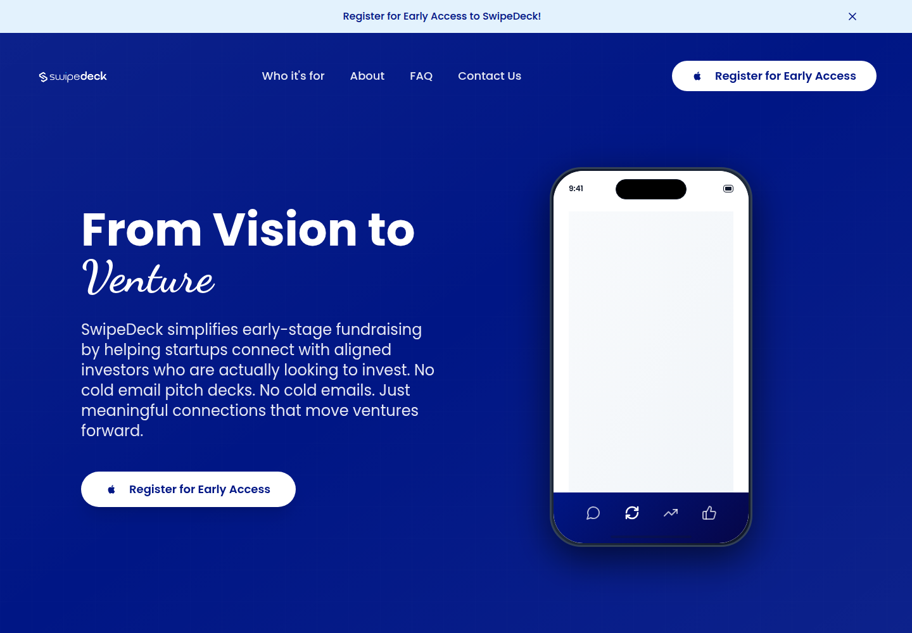
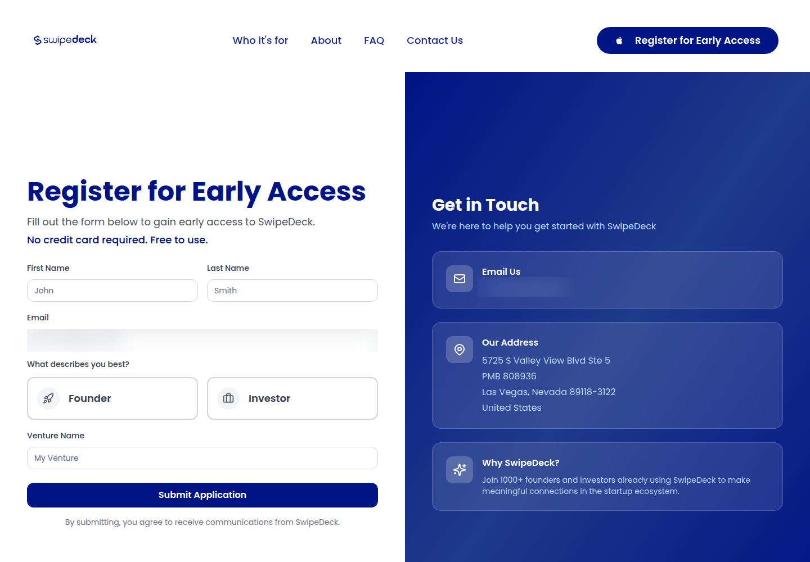
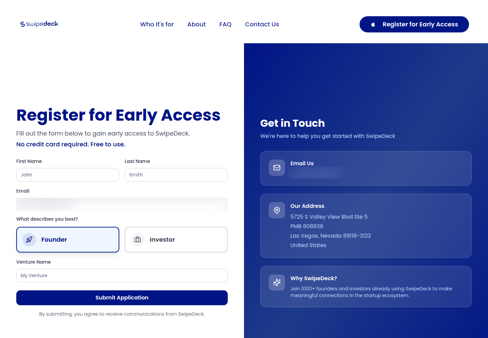

Profile
- Company
- SwipeDeck
- Url
- https://swipedeck.ai/
- Source Category
- Direct competitors
- Research Status
- Deep Cited Research / Draft Complete
- Current Status
- live but pre-launch/beta - re-verified 2026-07-19 by direct fetch (HTTP 200). Site is a single marketing/landing page for a product still in 'beta/early access registration phase' per its own copy; no functioning app, no app-store listing, no press coverage, no Crunchbase/PitchBook profile found. Registered to 'SwipeDeck LLC', 5725 S Valley View Blvd Ste 5, PMB 808936, Las Vegas, NV - a registered-agent/virtual mailbox address commonly used by very early-stage or single-founder LLCs, not evidence of an operating HQ.
- Founded Launch Year
- not found / no public source - no founding date disclosed anywhere; LLC registration address is a Nevada virtual mailbox, consistent with a very recently formed shell/early venture
- Company Age
- not found / no public source
- Hq Country
- US (Nevada LLC registration only; not necessarily an operating HQ)
- Operating Area
- not found / no public source
- Target Users
- Early-stage startup founders raising capital, and investors seeking curated deal flow by vertical/stage/region
- Product Category
- swipe/card matchmaking; founder-investor / capital matching. No cofounder/founder-to-founder feature, no data room, no NDA/e-sign found.
Product Flows
- Swipe Card Interface
- yes
- Mutual Match
- yes
- Ai Matching Scoring
- yes - smart investor-startup matching
- Ai Deck Scoring
- not found / no public source - product explicitly markets 'no pitch deck required', i.e. it avoids deck upload/scoring entirely in favor of structured profile fields
- Founder To Founder Flow
- Not applicable - SwipeDeck has no cofounder-matching product; it is exclusively a founder-investor discovery tool.
- Founder To Investor Flow
- yes - investors swipe startup cards and chat after mutual interest
- Project Profiles
- yes - startup documents/profiles uploaded
- Messaging Collaboration
- yes - chat after mutual interest
- Mobile App
- yes - mobile-first claim
- Web App
- yes
Security & Documents
- Nda Gated Unlock
- not found / no public source (original automated pass already marked this 'yes' with no supporting evidence; downgraded)
- Data Room
- yes - upload/share docs in early-access flow
- E Signature
- not found / no public source
- Meeting Prep Ai Briefing
- not found / no public source
Pricing, Funding & Traction
- Pricing Model
- not found / no public source - no pricing page or tier information found
- Business Model
- not found / no public source - presumed marketplace/subscription model typical of the category, but not documented
- Total Funding
- not found / no public source - no Crunchbase, PitchBook, or press record of any funding
- Funding Rounds
- not found / no public source
- Investors
- not found / no public source
- Funding Source Type
- Unknown - likely bootstrapped/pre-funding given single-LLC registration and beta status
- Last Funding Date
- not found / no public source
- Users Traction
- not found / no public source - no user counts, no press mentions, no reviews found anywhere
- Deals Funding Facilitated
- not found / no public source
- Partnerships
- not found / no public source
- Media Coverage
- not found / no public source - no TechCrunch, Crunchbase News, or industry press coverage found; the company has essentially no independent web footprint beyond its own domain and its own repeated marketing copy appearing in SEO/aggregator content
- Product Update Activity
- not found / no public source - single-page static site, no changelog, no blog, no visible update history
- Acquisition Rebrand History
- not found / no public source
Scores
- Product Overlap Score
- 3
- Feature Maturity Score
- 2
- Market Traction Score
- 1
- Funding Strength Score
- 1
- Ai Depth Score
- 2
- Nda Security Strength Score
- 1
- Network Moat Score
- 1
- Direct Threat Score
- 1.6
- Source Confidence
- Low
Evidence Notes
- Primary Sources
- https://swipedeck.ai/
- Secondary Sources
- No independent secondary sources (press, Crunchbase, app stores, review sites) were found despite multiple targeted searches; all located content traces back to swipedeck.ai's own marketing copy.
- Unsupported Claims
- SwipeDeck's own site claims reducing founder effort 'from 95% to 25%' and increasing success rates 'from 15% to 85%' - these are unverifiable, uncited marketing statistics with no methodology disclosed; treat as unsupported.
- Contradictions
- None found relative to the original pass beyond the NDA flag noted above; largely consistent with the original 'thin evidence' assessment.
- Last Checked
- 2026-07-19
- Notes
- This is the company in the batch where the least could be verified despite real effort - no founder names, no funding, no traction figures, no app store presence, no press coverage, and a Nevada virtual-mailbox LLC address are the only concrete facts found beyond the marketing site's own claims. Likely a very early, possibly single-founder, pre-traction beta product.
Registration Flow
Research date: 2026-07-19. Screenshots are sanitized public copies from the private registration-flow capture set; credentials, tokens, verification links/codes, browser chrome, and private identifiers are not intentionally published.
Outcome: stopped at required truthful-details / submission boundary.
Stop point: Blank official early-access form immediately before application submission
Blocker / boundary: SwipeDeck currently offers an early-access application rather than direct self-service account creation. The next action is Submit Application, which is outside this evidence-only task's permitted boundary.
- Official public homepage. SwipeDeck's official homepage presents the product as an early-stage startup and investor matching platform and routes visitors to Register for Early Access.
- Early-access application form. The official registration route opens a free early-access application requesting first name, last name, email, founder-or-investor role, and venture name. The final action is explicitly labeled Submit Application, and submission opts the applicant into SwipeDeck communications.
- Founder application branch selected. Selecting Founder marks the founder role while retaining the same required contact and venture fields. No personal data was entered and the application was not submitted.
- Investor application branch selected. Selecting Investor marks the investor role while retaining the same required contact and venture fields. No personal data was entered and the application was not submitted.


